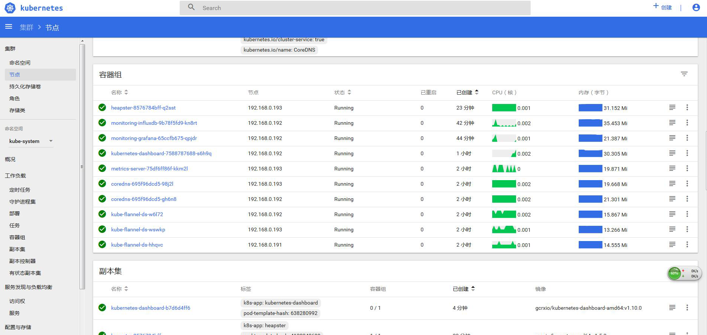
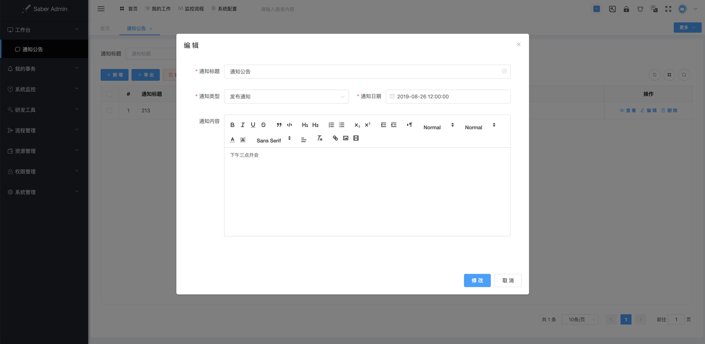

Saber简介
- Saber是SpringBlade前端UI框架，主要选型技术为Vue、VueX、Avue、Element-UI。
- 本手册主要讲解如何在Saber平台下开发业务模块，同时也是Vue、VueX、Avue入门的绝佳选择。
SpringBlade简介
- SpringBlade 是由一个商业级项目升级优化而来的SpringCloud微服务架构，采用Java8 API重构了业务代码，完全遵循阿里巴巴编码规范。
- 采用Spring Boot 2 、Spring Cloud Greenwich 、Mybatis 等核心技术，同时提供基于React和Vue的两个前端框架用于快速搭建企业级的微服务系统平台。
- SpringBlade 致力于创造新颖的开发模式，将开发中遇到的痛点、生产中所踩的坑整理归纳，并将解决方案都融合到框架中。
说明
本手册主要讲解前端技术栈，还需要后端的同学可移步：https://www.kancloud.cn/smallchill/blade
官网
- 官网地址： BladeX
项目地址
- 项目地址：SpringBlade
- 前端UI项目地址(基于Vuet)：Saber
- 前端UI项目地址(基于React)：Sword
- 核心框架项目地址：BladeTool
- 交流群：
477853168
主要特性
- 采用前后端分离的模式，前端开源两个框架：Sword(基于 React、Ant Design)、Saber(基于 Vue、Element-UI)
- 后端采用SpringCloud全家桶，并同时对其基础组件做了高度的封装，单独开源出一个框架：BladeTool
- BladeTool已推送至Maven中央库，直接引入即可，减少了工程的臃肿，也可更注重于业务开发
- 集成Sentinel从流量控制、熔断降级、系统负载等多个维度保护服务的稳定性。
- 注册中心、配置中心选型Nacos，为工程瘦身的同时加强各模块之间的联动。
- 使用Traefik进行反向代理，监听后台变化自动化应用新的配置文件。
- 极简封装了多租户底层，用更少的代码换来拓展性更强的SaaS多租户系统。
- 借鉴OAuth2，实现了多终端认证系统，可控制子系统的token权限互相隔离。
- 借鉴Security，封装了Secure模块，采用JWT做Token认证，可拓展集成Redis等细颗粒度控制方案。
- 稳定生产了一年，经历了从Camden -> Greenwich的技术架构，也经历了从fat jar -> docker -> k8s + jenkins的部署架构
- 项目分包明确，规范微服务的开发模式，使包与包之间的分工清晰。
工程结构
SpringBlade
├── blade-auth -- 授权服务提供
├── blade-common -- 常用工具封装包
├── blade-gateway -- Spring Cloud 网关
├── blade-ops -- 运维中心
├ ├── blade-admin -- spring-cloud后台管理
├ └── blade-develop -- 代码生成
├── blade-service -- 业务模块
├ ├── blade-desk -- 工作台模块
├ ├── blade-log -- 日志模块
├ ├── blade-system -- 系统模块
├ └── blade-user -- 用户模块
├── blade-service-api -- 业务模块api封装
├ ├── blade-desk-api -- 工作台api
├ ├── blade-dict-api -- 字典api
├ ├── blade-system-api -- 系统api
└── └── blade-user-api -- 用户api
blade-tool
├── blade-core-boot -- 业务包综合模块
├── blade-core-cloud -- 分布式核心模块
├── blade-core-launch -- 基础启动模块
├── blade-core-log -- 日志封装模块
├── blade-core-mybatis -- mybatis拓展封装模块
├── blade-core-secure -- 安全模块
├── blade-core-swagger -- swagger拓展封装模块
├── blade-core-transaction -- 分布式事务核心模块
└── blade-core-tool -- 工具包模块
界面一览




